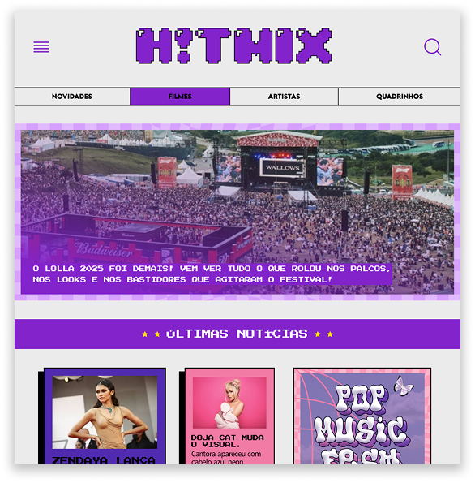

Projetos

Isabella.Siqueira
Sou designer com foco em UI/UX e desenvolvimento front-end.
Também atuei como estagiária na área de Análise de Requisitos, onde desenvolvi habilidades de escuta ativa, organização de demandas, documentação técnica e comunicação entre usuários e desenvolvedores — experiências que enriquecem minha abordagem no design centrado no usuário.
Gosto de unir design estratégico com execução técnica — desde a pesquisa e estrutura de navegação até a prototipação e desenvolvimento responsivo.